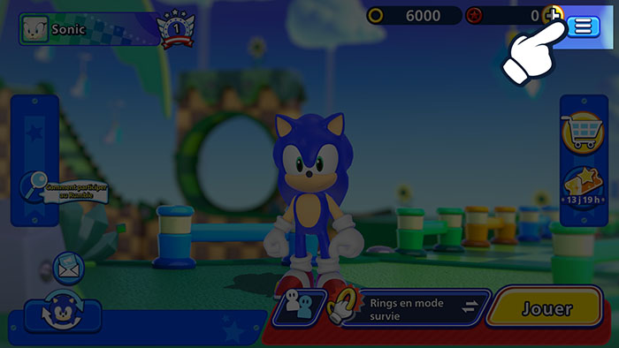
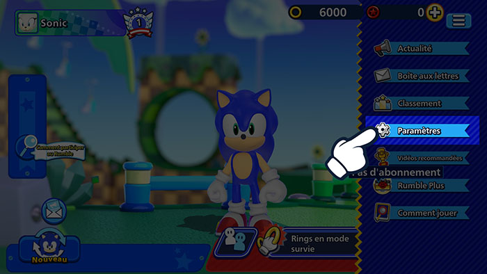
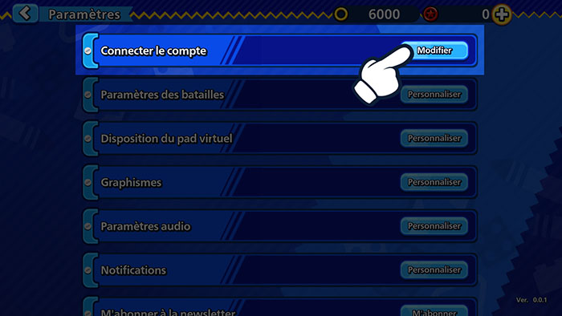
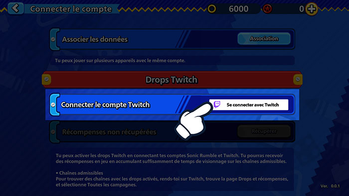
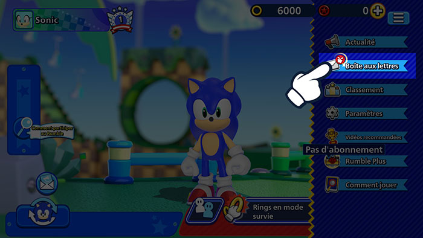
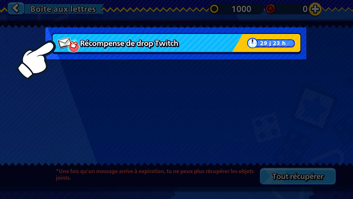

Drops TwitchRegarde des streams en direct et obtiens des récompenses en jeu !
Drops TwitchRegarde des streams en direct et obtiens des récompenses en jeu !
Associe ton compte Twitch dès maintenant !
Comment associer ton compte
1Clique sur le bouton menu dans Sonic Rumble.

2Va dans les paramètres.

3Clique sur Connecter le compte.

4Sélectionne Drops Twitch et choisis Se connecter avec Twitch pour te connecter à ton compte Twitch.

5Cela associera ton compte Twitch à ton compte Sonic Rumble.
Comment accepter les récompenses
1Clique sur le bouton menu dans Sonic Rumble.

2Va dans ta boîte aux lettres pour voir tes récompenses.

*Il est possible de rencontrer un problème au moment de récupérer des récompenses si elles ont été envoyées dans ta boîte aux lettres pendant la maintenance.
Si cela se produit, va dans Menu > Paramètres > Connecter le compte > Drops Twitch et clique sur le bouton Récupérer pour renvoyer les récompenses dans ta boîte aux lettres.
FAQ
- QLes Drops Twitch : qu'est-ce que c'est ?
- AUn type d'événement qui te permet de gagner des récompenses en jeu simplement en regardant des streams en direct sur Twitch.
Tu peux participer en associant simplement ton compte Sonic Rumble avec ton compte Twitch. - QComment puis-je recevoir des récompenses ?
- AActive la fonctionnalité Drops Twitch et regarde des streams en direct de Sonic Rumble qui répondent aux conditions pour remplir ta jauge de Drops. Tu peux recevoir des récompenses une fois ta jauge pleine.
- QComment puis-je voir si je participe actuellement à des événements de Drops Twitch ?
- AAccède à la page d'inventaire Twitch ici pour vérifier tous les événements de Drops Twitch auxquels tu participes et les récompenses que tu as reçues.
- QCombien de temps faut-il pour que les récompenses des Drops arrivent ?
- ALes récompenses sont distribuées dans ta boîte aux lettres en jeu dans les 24 heures.
Si tu souhaites retirer l'association à ton compte après avoir reçu tes récompenses, n'oublie pas de récupérer les récompenses dans ton compte Sonic Rumble avant de le faire. - QSi je possède plusieurs comptes Sonic Rumble, puis-je récupérer des récompenses pour tous ?
- ALes récompenses de Drops Twitch ne peuvent être récupérées qu'une seule fois. Chaque compte Twitch ne peut être lié qu'à un seul compte Sonic Rumble à la fois.
Le même type de récompense ne peut pas être récupéré plus d'une fois pour chaque compte Sonic Rumble et compte Twitch.